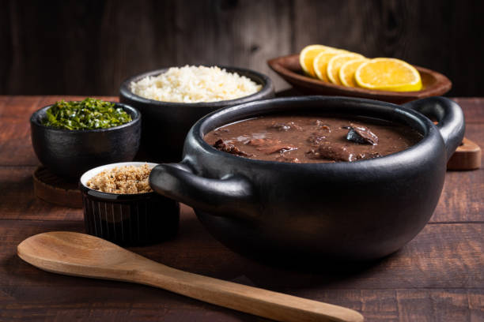
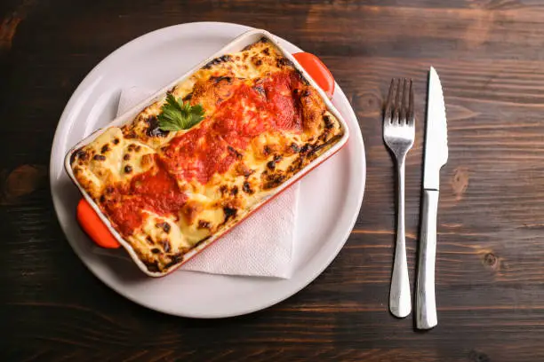
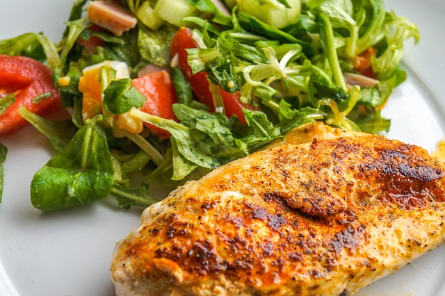
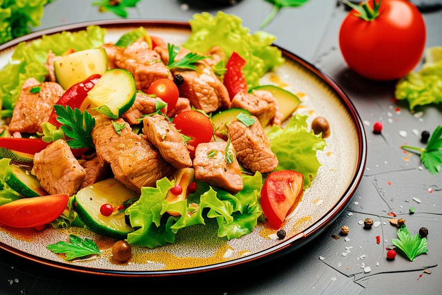
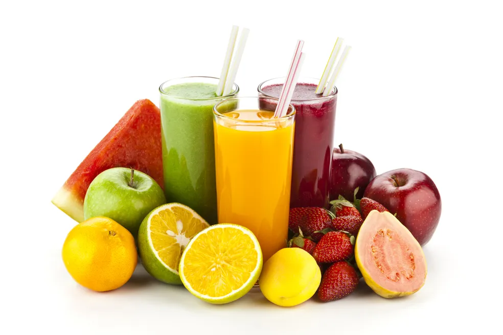

Delícias da Casa
"Sabor e carinho em cada prato.Confira nosso cardápio!"
Cardápio
Pratos Principais

Feijoada Completa
Tradicional e saborosa e servida com couve, arroz e farofa.

lasanha da Vovó
Camadas generosas de massa, carne e muito queijo.

Filé de Frango Grelhado
Acompanhado de arroz branco, salada e legumes no vapor
Saladas

Salada Caesar
Alface crocante, frango, crotons e molho especial.
Salada Tropical
Mix de folhas com frutas da estação e molho agridoce.
Salada Elranchito
Alface romana e americana com mix de queijo e bacon e molho BBQ ranch.
Sobremesas
 Pudim de Leite Condensado
Clássico brasileiro com calda de caramelo.
Pudim de Leite Condensado
Clássico brasileiro com calda de caramelo.
Mousse de Maracujá
Refrescante e com sabor marcante.
Torta de Limão
Crocante,cremosa e levemente azedinha.
Bebidas

Suco Natural(laranja, limão ou maracujá)
Refrigerante
Água Mineral
Café Expresso
"2025 Delícias da Casa - Feito comamor para você."